This article is a work in progress - expect placeholders, grammatical edddrrors, and missing sections.

The Paper Kingdom
Planned as the follow-up to their fourth album Danger Days
The Paper Kingdom has never been officially released and is currently obtainable only through unofficial channels. Leaking and distributing copyrighted material is against the law; we do not condone it, nor will we be sharing any links to copyrighted material on this page.
Timeline
Who's who?
My Chemical Romance
- Doug McKean: Audio engineer, record producer, and friend of the band who did engineering for The Black Parade and Danger Days, and was set to produce The Paper Kingdom.
Buyers and Sellers
- Excalibur: Leaker who uploaded three snippets from The Paper Kingdom onto a forum and put the full album on sale.
- Aang and ATTAM: Forum users who allegedly purchased the album together for ten thousand dollars.
- D0UG: Served as a middleman for the transaction between seller Excalibur and the buyers Aang and ATTAM.
- Coming of Jesus: Leaker who posted an unfinished workprint of the full album online, and attempted to sell more unreleased material. He would later be called out for scamming and obnoxious behaviour, leading to his reputation being ruined.
- Toasty: Leaker who released numerous tracks from The Paper Kingdom sessions, disappearing shortly after dropping a mega leak containing 20 gigabytes of material.
2010
November
-
November 22, 2010: Danger Days is released.
2011
August
-
August 12, 2011: During an interview with chorus.fm, Mikey Way reveals the band has been experimenting with new material.
Yeah, we have actually. We kind of write every day and we don’t even realize we’re doing it. Sometimes we’ll be at soundcheck and someone will have a riff and everyone starts playing off the riff, or Gerard [Way] has a vocal melody and everyone starts playing off the vocal melody. We’ve had tons of stuff come from that. We’re not really sure where the songs are going to end up or what they’re going to be yet, but we’re just going to keep writing and writing. After this tour, we’re going to pretty quickly continue demoing and then get in there as soon as possible to make a new album.
When asked what the new material sounded like, Mikey responded:
The weird thing is, whenever we have a new batch of songs pop up during a record cycle or after a record cycle, it’s usually some kind of kind of thing that gets us to the next sound. Any time we try to guess where we’re going to be or where we’re going to go, we’re usually wrong but we’re always very pleasantly surprised at where we ended up. It’s hard for us to guess what it’s going to end up sounding like. Right now, it’s definitely a mix of Danger Days and some of the stuff we did back in the day.— Mikey Way
Source: chorus.fm
2012
January
-
January 18, 2012: During an interview with Destroya News, Frank Iero reveals the band is in the early stages of figuring out their fifth album. He doesn't give any further information, but he does say:
“I can tell you that I think about music in colour, and I see a lot of orange in the next record."— Frank Iero
Source: Destroya News
-
January 31, 2012: Two fans separately record videos of the band doing soundchecks before a show at Festival Hall, Melbourne, Australia. In the first video (which is very low-quality), the band can be heard playing an unknown song (speculated at the time to be new material).
In the second video, taken at a different point during the soundchecks, James can be heard jamming while Gerard performs vocal warm-ups(?). According to the uploader, the band began performing a new song, but he was unable to record it as his camera ran out of battery.'
"I loathe my camera so much because it ran out of battery after this, just when they played a NEW SONG. It was so beautiful, oh my God. But I can't remember it now. All I remember is one lyric that was like "when the rain pours down". Waaahhhh :("— Gee Whizzy
Source: ToxicBoomKilljoys & Gee Whizzy
February
-
February 4, 2012: During an interview with Noise11, the band reveals they are building a new studio in Los Angeles to record their fifth album.
Yeah, back in L.A., we just got a studio, so we’re kind of building that out and basically trying to make a kind of compound where we can be creative and be there whenever we want to be. That’s one of the tough things, you know, when you’re doing records in a kind of a cycle, you have like maybe 3 or 4 months’ time window where you have to write and record a record. Sometimes that’s tough, and you can take longer, but you always feel like there’s something over your head like a time constraint. And, you know, now we’ll have our own place where we can go and make music 24 hours a day, and it’s going to be great.
Ray also reveals they'll be working with sound engineer Doug McKean, who did engineering for both The Black Parade and Danger Days
Doug McKean, we’ve done our past two records with him, he’s an awesome engineer, so he’s going to be working with us. He knows everything. He’s a genius. He definitely, while we’re in the studio with us, helps shape the sound of songs. He does funny stuff like play back stuff in a different way or change arrangements and trick our ears and we’ll be like “That was awesome! Look at what we did!”— Ray Toro
Source: Noise11 (Transcript)
March
-
March 21, 2012: The band is interviewed by Australian news outlet The Advertiser, during which Mikey Way talks about the fifth album. He says that while he doesn't know yet what the album will sound like, he's confident it will prove non-believers wrong.
People had formulated ideas about our band just based on seeing a kid in one of our T-shirts – and they were wrong.— Mikey Way
Source: Unavailable, but Destroya News reposted the interview on their website.
-
March 23, 2012: My Chemical Romance posts pictures on their Facebook page, showing off their new studio. One of the pictures shows songwriting notes, and the structure of a song.

Source: Facebook
May
-
May 15, 2012: During an interview with The Aquarian, Frank Iero says the writing process is going well and that they're about a month away from recording their fifth album.
It’s going really well, actually. I’m really excited. I can’t wait to start tracking. I think we’re maybe a month away from the record button lighting up.
He also reveals touring drummer Jarrod Alexander will be recording with them.
Jarrod is a rad guy and a fantastic player. It’s been really fun making music with him these past few months. He loves coffee and hitting drums super-hard… and the fact that he’s not a thieving piece of garbage is a breath of fresh air.— Frank Iero
Source: The Aquarian
June
-
June 11, 2012: While the rest of the band is out watching the 2012 Stanley Cup Final, Gerard writes a new song called "Fake Your Death". Reflecting on the song two years later, he wrote:
What was not so obvious at the time was that the song was, and would serve as, a eulogy for the band, though I should have known it from the lyrics. I think internally I did, as I felt an odd sense of sadness and loss after hearing back the words on top of the music. I also felt a strange sense of pride in how honest it was, and could not remember a band recording a song of this nature, being so self-aware. Ending felt like something honest, and honest always feels like something new.— Gerard Way
Source: AltPress
July
-
July 18, 2012: During recording sessions for the fifth album, producer Doug McKean goes on Twitter and asks if anyone can provide him samples of the Narita Airport announcement chimes.
-
July 28, 2012: Doug posts a series of pictures on Twitter, showing the band in the studio.
-
July 31, 2012: Doug posts two more pictures from the studio. "Squirm" is the title of a 1976 horror film, and it's possible the band was using it for inspiration.


August
-
August 13, 2012: Gerard briefly talks about the fifth album during an interview with Kevin Smith.
Gerard Way: [holds up 5 fingers] Five. I’m only calling it-… I like to call it MCR 5 right now, so I’m really excited…
He says the album is going "rather quickly" and that he'll be meeting with Colleen Atwood (costume designer for The Black Parade and Danger Days) to discuss costumes for the fifth album.
Kevin Smith: When’s the album come out?
Gerard Way: We don’t know yet, but this one is going rather quickly, and I’m very excited about that. And, it’s very dark so far, but I really like it.
Kevin Smith: Are you going to dress up for this one, or are you going to be you?
Gerard Way: This one. Yeah, this one has… Because, the last one, we didn’t dress up. This one I’ve got something worked out that’s really awesome, and I can’t wait-… I’m actually going to meet with Colleen [Atwood] soon about it.
October
-
October 13, 2012: While promoting his upcoming comic book The True Lives of the Fabulous Killjoys, Gerard is asked by interviewer Becky Cloonan if the next album will tie into the comic book.
Gerard Way: No, the next album will be something completely different.
When asked if he's found a theme for the next album, Gerard says:
Gerard Way: It's a little too early to say, if I say it now, it probably changed five more times.
Becky Cloonan: You'll just jinx it.
Gerard Way: Yeah, I'll jinx it too.Source: Artisan News
2013
March
-
March 9, 2013: Kill Hannah frontman Mat Devine is interviewed by Kerrang. During the interview, he reveals Gerard Way played him four new songs from their upcoming fifth album.
It's incredible! It's slightly new territory; it's an evolution. I've heard four new songs. It's exactly in line with what My Chem fans will be thrilled to hear, but at the same time it really marks what I think is a new phase [for the band]. It's super refreshing, but at the same time familiar in the way you want it to be.— Mat Devine
-
March 23, 2013: My Chemical Romance announces their break-up, and the fifth album is scrapped.
Being in this band for the past 12 years has been a true blessing. We've gotten to go places we never knew we would. We've been able to see and experience things we never imagined possible. We've shared the stage with people we admire, people we look up to, and best of all, our friends. And now, like all great things, it has come time for it to end. Thanks for all of your support, and for being part of the adventure.— My Chemical Romance
Source: My Chemical Romance
October
-
October 5, 2013: During a panel discussion at the Sydney Graphic Festival, Gerard talks about the depressive state he was in during the recording of the scrapped fifth album.
I fell back into a lot of old habits because it was easy, because I felt in control. I wasn't in control at all, and then after climbing out of it - it got worse, it got worse because I became even more paralysed, even more depressed and I started to work on a record that was a concept record about a group of parents in a support group because they all lost their children in a horrible way, and that was supposed to be the last record - and that's not a story I wanted to tell, and the songs reflected that. You could it hear it, and all the joy, it was gone.— Gerard Way
Source: Sydney Graphic Festival Panel
2014
January
-
February 1, 2014: Gerard is interviewed by radio host Zach Dresch for KCFS, where he's asked about My Chemical Romances scrapped final record.
Zach Dresch: Before My Chem broke up, you were working on a- I was watching your interview with Grant Morrison in Australia. You're talking about how your final album would be a concept record about a support group of parents. Was that true?
Gerard Way: Yea, that is true. That was where it was heading, and the visuals were really beautiful, um, and it was again a lot different like all of the different eras of MCR were very different.Source: s Interview with Zach Dresch
April
-
April 29, 2014: James Dewees is interviewed by news outlet Under The Gun Review about his new solo project Reggie & the Full Effect, and he's asked how he felt about My Chemical Romance's break-up.
It was weird because, as I got asked to join the band, I had played with them for seven years [already] and was asked to become a member of the band, sign a contract, all that shit, and live in LA for a year working on the record. Seven days a week, ten hours a day, writing music. We have like twenty-six songs that will never be heard. But at the same time, I’ve been their friends for a really long time, and I could see it coming. I mean I went through the first Get Up Kids breakup. Where it was like, I knew Matt was ready to go. So I could kind of tell that Gerard had the signs, like he wasn’t happy, this wasn’t what he wanted to do, he wants to go do other stuff.
For me it’s always like, your friends and family comes first. So, I mean, he told me this is what he was thinking, and I was like, “Hey, if this is what you want to do, it’s what you want to do. You shouldn’t force yourself to do something you don’t want to do.” When you hear bands do that, it’s like they’re doing “that.” “Like oh man, they’re not writing good music anymore, they’re doing it just to get paid.” If your heart’s not in it, you shouldn’t be doing it — James DeweesSource: Under The Gun Review
July
-
July 24, 2014: Gerard is featured on Andy Greenwald's podcast, where he reveals the title of the scrapped fifth album and offers some insight into its production.
Gerard Way: That My Chem record that didn't get made, it was really- not only was it really dark, it was supposed to be like a whole stage production that we went into places like the theatre that's here in Downtown.
Andy Greenwald: The Disney Theatre, yeah.
Gerard Way: Because that's where I'd seen Black Rider. I was basically finding anything else to do besides write music. And that started on Danger Days, really, once that music was done there was no tweaking to it, it was just like "art, art, art, art, art". And then, this was starting right away where it was like, yeah we cared what the songs were, it's just gonna be a bunch of dark stuff. You know, we're gonna build costumes and stage set and it's going to be a storyline about a support group of parents who are dealing with the loss of their children, so they make up this story about the children all being missing in the woods and fighting this witch. And that, that's what it was about.
Andy Greenwald: Did you have a name for it?
Gerard Way: Yeah, it was called The Paper Kingdom.
Andy Greenwald: Sounds kinda cool, sounds dark.
Gerard Way: Yeah, it does, and you know, there may be a time in my life where I want to do The Paper Kingdom, and maybe it's a book, maybe it's something else. I don't feel that dark, I don't feel like I want to be in a support group for- mentally, on stage every night being in a support group.Source: Andy Greenwald Podcast
-
September 30, 2014: Biographer Tom Bryant releases Not the Life It Seems: The True Lives of My Chemical Romance, an unauthorized biography detailing the bands history from their formation in 2001 to their break-up in 2013. The book reveals new information about the production of The Paper Kingdom.
It's revealed that touring keyboardist James Dewees was going to be involved in the writing process for The Paper Kingdom, becoming a full-time member of the band.
That was a big change for us, with that, came the ability to be super dark and have these ominous things going on that really filled us out. Having James around was really cool because he’s an absolute genius. I’ve never met anybody as musically skilled and creative as him. — Frank Iero talking about working with keyboardist James Dewees.
Gerard's close friend and comic book writer Grant Morrison also discusses the dark time that the band was going while recording The Paper Kingdom, and how it influenced their music.
The material I heard was super-dark, it was very strange and wasn’t like anything else they had ever done. They were almost going in a Radiohead direction at that point. It probably wouldn’t have worked for them and I think Gerard knew that all along. The last year was a dark time and the music coming out of it was very gothic, I would say.— Grant Morrison
Despite the song Fake Your Death being included in their Greatest Hits album, Frank suggests the rest of the material they recorded for The Paper Kingdom will never see the light of day.
It’s so far from being done that I don’t know how [much of] it could come out, there were a couple of things here and there that might have been finished but I don’t think it would feel right to go in and finish the other stuff later. Whether there are versions of things that could be agreed upon that could be considered finished, I don’t know. Time will tell.— Frank Iero
Source: Not the Life It Seems: The True Lives of My Chemical Romance
2019
October
-
October 31, 2019: My Chemical Romance announces they will reunite for a show in Los Angeles, scheduled for the 20th of December.
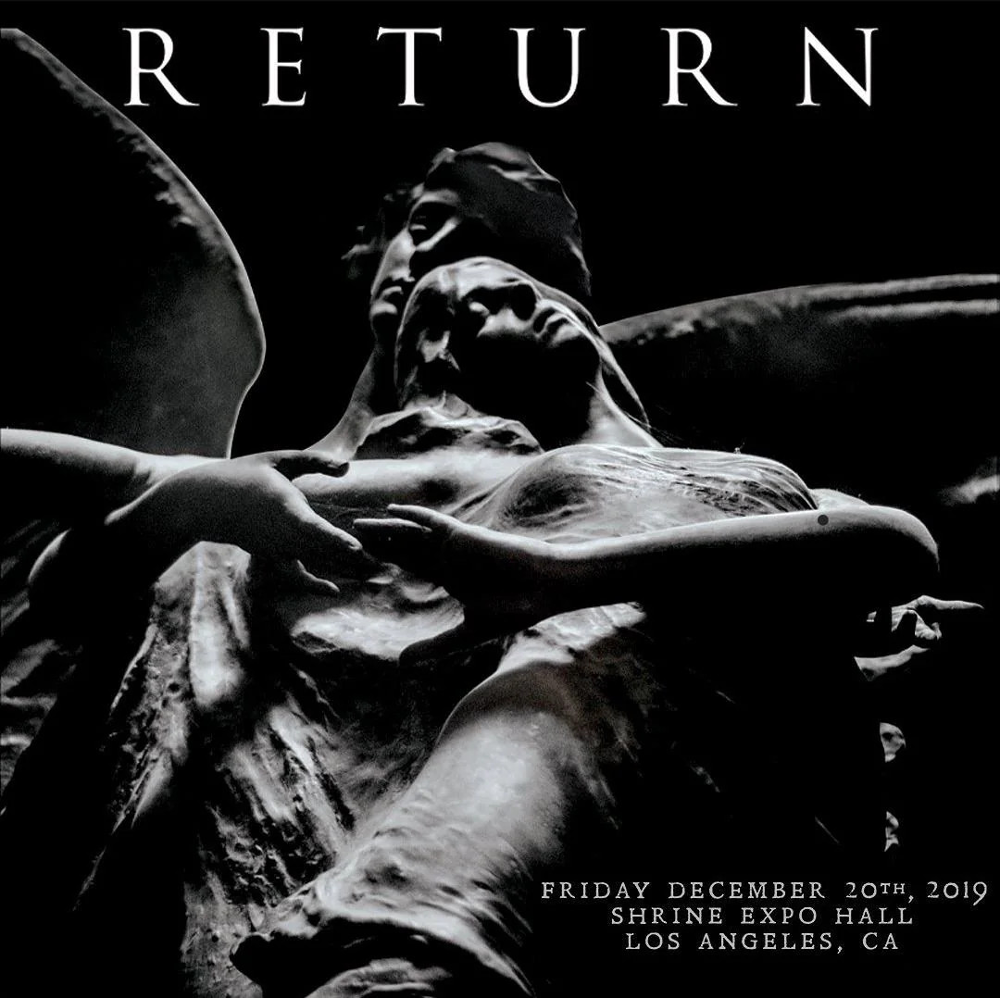
2020
2022
June
-
June 29, 2022: Doug McKean, audio engineer, record producer, and friend of the band, unexpectedly passes away from a brain haemorrhage at the age of 54. The band issues an official statement paying tribute:
My Chemical Romance lost Doug McKean, a dear friend, a collaborator, a partner, a brother, a problem-solver, a genius, an integral part of our music. Doug was someone who made us laugh, made us better, understood, and always came to the rescue. He is deeply missed. He always will be.
Source: Loudwire
September
-
September 26, 2022: On the music trading website LEAKED, a user called Excalibur leaks snippets of three songs from The Paper Kingdom:
- Dark Cloud
- Witch
- Wake Up!
Excalibur initially lists the album for sale for $10,000, though it's later changed to "Best Offer" instead.
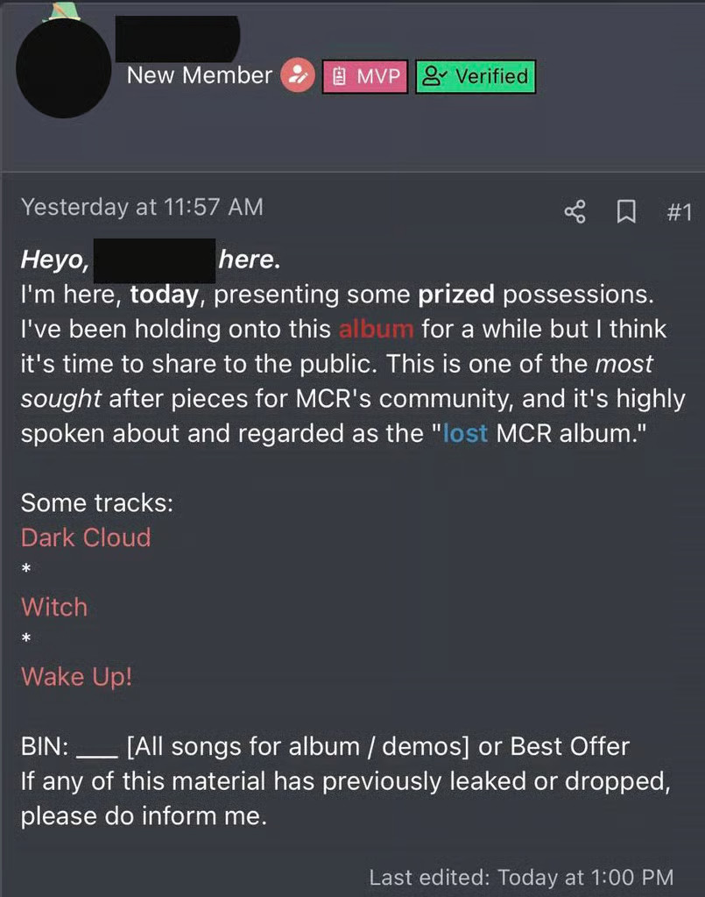
Source: Blunt Magazine
-
September 27, 2022: Excalibur is surprised by the strong reaction to the leaks from the My Chemical Romance community, and writes:
Okay okay, I've seen countless remarks on both Reddit and Twitter (some strange threats even) I'm here to respond. Personally, I didn't know this would blow up to this extent and for now I'm gonna keep this as a private buy regarding the ones who are mad that I had any intentions to leak this knowing it's music the band made when they were all in a dark place. A group buy isn't out the window just yet but if there's enough interest for one I MAY consider it. None of this is "fake" and I don't think AI can generate rock / the instrumentals that easily.
Although, if anyone's interested in the Foundations of Decay session, message me. I also have countless versions of the track.— ExcaliburA group of dedicated fans attempt to organize a group buy, but it falls through due to logistical issues with fund collection. A user on the forum who goes by Aang later claims to have purchased the album from Excalibur, sharing that he's going to "keep it all private" but is open to releasing a single song.
Source: Blunt Magazine
October
-
October 17, 2022: My Chemical Romance debuts Fake Your Death live during the final night of their five-day residency at the Kia Forum, making it the first song from The Paper Kingdom to be performed live.
Source:
New Musical Express
2023
June
-
June 10, 2023: Alternative rock community NO COOL KIDS ALLOWED makes a post on Facebook, revealing a livestream they held several months prior where they played all of the leaked snippets from The Paper Kingdom had been copyrighted striked. YouTube's Content ID system automatically identified one of the snippets as "Paper Swords" by My Chemical Romance.
Fans theorized at the time that "Paper Swords" could've been another song from The Paper Kingdom, though this was purely speculation as nothing could be confirmed at this time.
Source: NO COOL KIDS ALLOWED
2024
July
-
July 4, 2024: An unidentified user on LEAKED leaks a six-minute long demo of a track from The Paper Kingdom titled "Witch", a snippet of which was leaked by Excalibur two years prior.
Users on the r/MyChemicalRomance subreddit notice that the first note of Witch was used in a 2020 promotional video for A Summoning, which was deleted for unknown reasons and later re-uploaded without sound.
Sources: Jewel City Times (citing the My Chemical Romance tracker)Notice
Reliable sources for this particular leak are extremely difficult to find, and no evidence of the original threads existence is currently known to exist.
An article from the Jewel City Times says a song leaked on the July 4th, 2026 and while it doesn't name the song, it does cite the My Chemical Romance tracker (which names the track) as it's primary source.
Until we have more solid evidence, everything relating to this leak (including what led up to it) will go into the speculation section.
-
July 5, 2024: Reddit user u/Live_Space_2840 reveals on Reddit that they spoke to Excalibur back in October 2022. During this conversation, Excalibur provides two extra snippets, one of them being from "Wake Up!" (different from the first snippet) and the other being from a demo for their most recent single, "The Foundations of Decay".
Excalibur estimates the album to be around 14 to 17 songs long, though he clarifies that some of them are just instrumentals. He also provides the Reddit user a partial track-list, consisting of ten unreleased songs.
- Into Your Arms
- Dive
- High Hopes
- Falling Down
- Birthday Girl
- Operation Day
- Louder
- Dogs
- Bike Thief (Demo)
- War Beneath The Rain
Link: Reddit
-
July 29, 2024: u/MarfeeWarfree on the r/MyChemicalRomance subreddit brings attention to an unknown track that played during the intro medley for the band's 2019 reunion show. The unidentified track consisted of a young girl singing "Happy Birthday", and was noted to be out-of-place compared to the rest of the medley - the rest of which was composed of officially released songs.
They speculate that it could've been the track "Birthday Girl", which was listed in the partial track-list previously provided by Excalibur.
I was sitting in class when it suddenly dawned on me; one of the supposed tracks that was on the leaked Paper Kingdom track list was called “Birthday Girl”. Between this and the opening of Witch being used for RETURN tour promotions, it makes you think.— MarfeeWarfee
Links: Reddit & 2019 Reunion Show
2025
-
July 6, 2025: Reddit user u/MyspacePuppy speaks to D0UG, a reputable middleman on the music trading forum LEAKED where The Paper Kingdom was originally put up for sale. D0UG claims he served as a middleman for the sale of The Paper Kingdom by Excalibur to buyers Aang and ATTAM, and that he was the one to leak Witch after ATTAM was exposed for reselling.
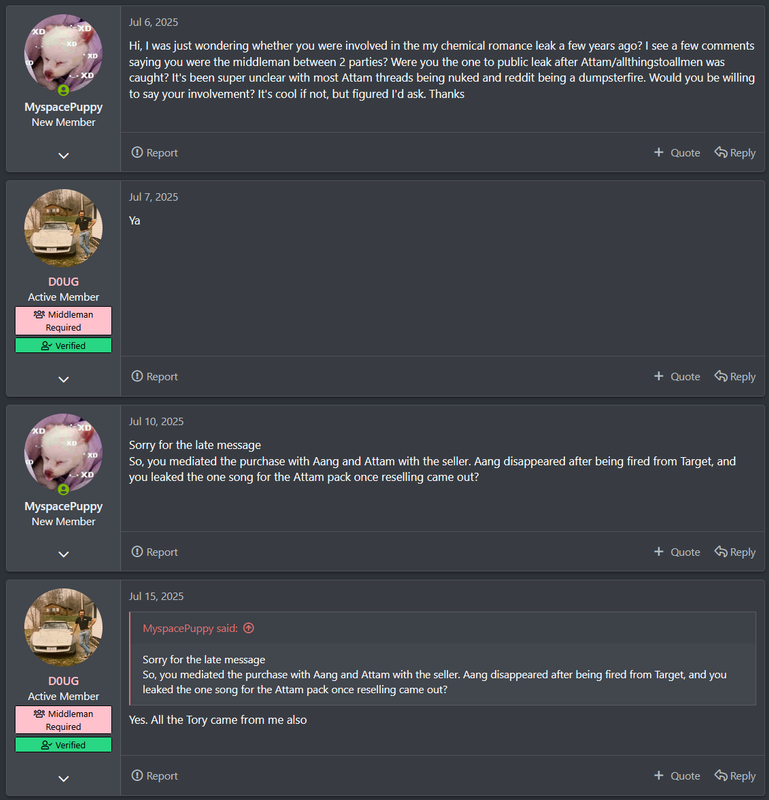
Link: Reddit
-
July 26, 2025: During a show in Los Angeles, the band debuts an unreleased song that was originally recorded for The Paper Kingdom. The song is dedicated to Doug McKean's family, who were in attendance at the show.
We were making a record that never came out, and this was one of the songs we really loved from it. It was just us in the studio with our friend Doug McKean—he was there recording it. His family's here tonight. I want this to go out to them.
Source: Pitchfork
This song is called War Beneath The Rain.
2026
After this point in the timeline, I'll be unable to provide links to various sources as they may contain copyrighted material - redacted screenshot evidence will used in place instead. Apologies for the inconvience.
February
-
February 1, 2026: A user on LEAKED named Coming of Jesus leaks an unfinished, one-hour long work-print of The Paper Kingdom online.
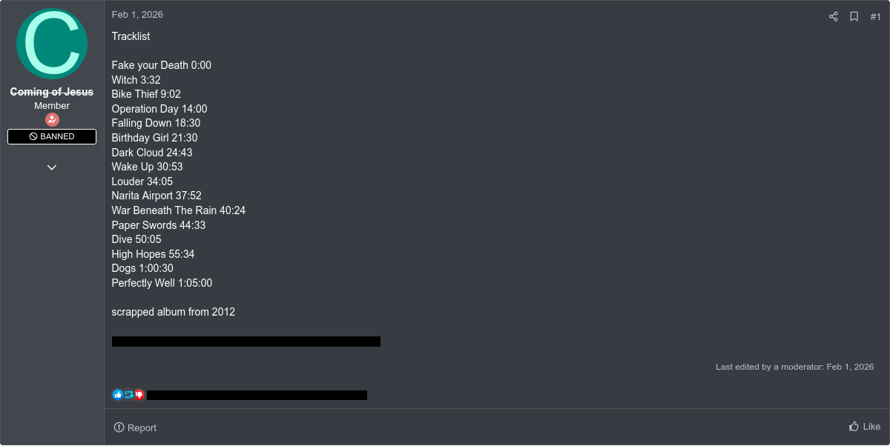
-
February 6, 2026: A user named Thunder of Zeus leaks a song called "Don't You Get Behind That Bus!". It's theorized by the community that it's a solo song by Gerard, though Content ID lists it under My Chemical Romance's copyright.
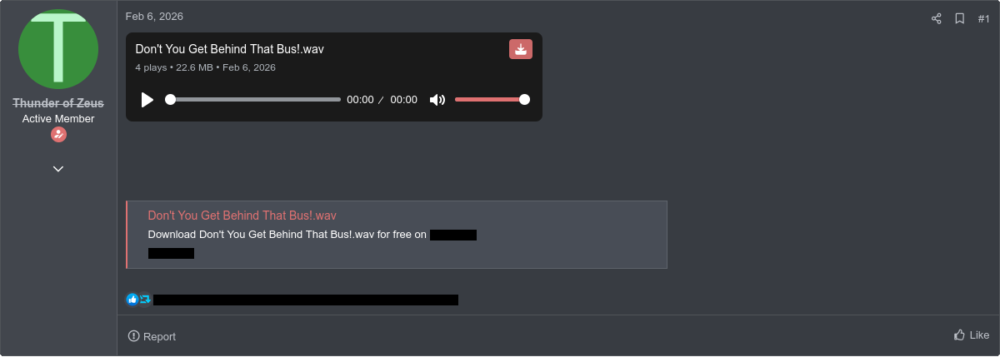
In a later conversation with a forum user, Thunder of Zeus says he obtained the track from a anonymous seller—and that he leaked it for fun.
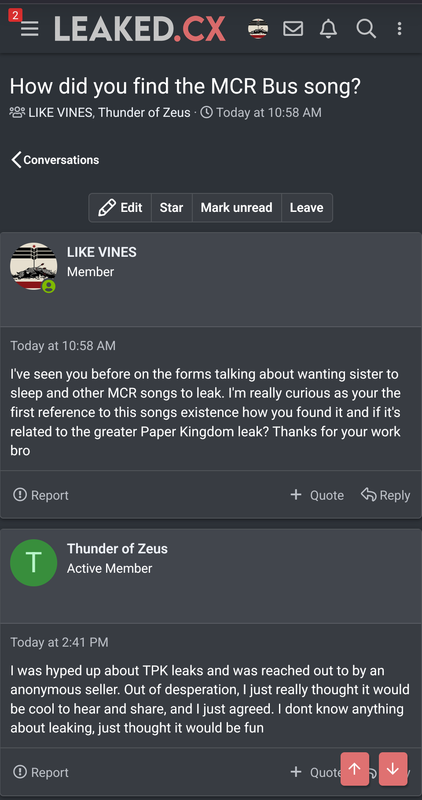
-
February 7, 2026: A user named InpuT leaks a track titled "Into Your Arms", after it was left out of the initial leak. InpuT accuses Coming of Jesus of double-selling and scamming, and tells him to "leak them all."
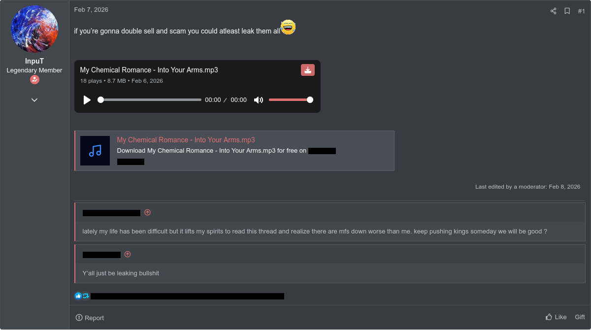
-
February 11, 2026: Coming of Jesus returns on a new account and post snippets of demos for the songs "Dive" and "High Hopes", originally provided to organizers of a failed group buy, whom he accused of wasting his time.
He claims to have offered lossless files, demos, alternate versions and new unreleased material to the group buy organizers, but ended the deal when they refused to provide proof of pledges, and that he will now be taking private offers for the material.
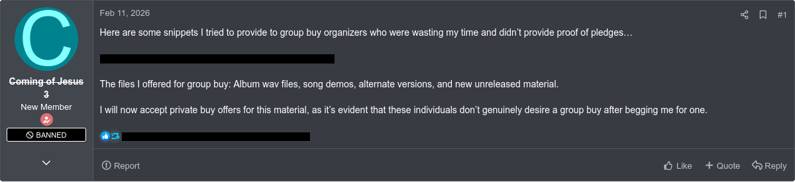
-
February 12, 2026: Coming of Jesus leaks another track called "Gaway Song", and says he was told it's the "only other leaked track in circulation". He re-iterates that he has multiple unreleased tracks, including demos and lossless files for The Paper Kingdom, and he's still open to private offers.
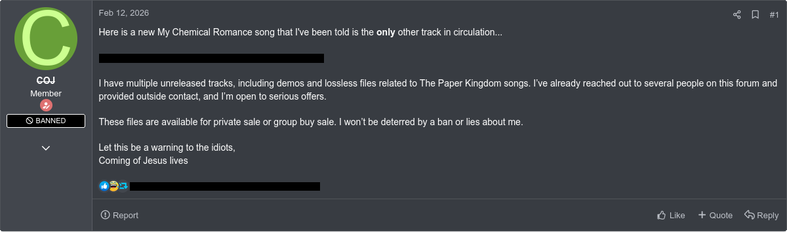
Coming of Jesus would later say all of the files have been sold to a private buyer, and it's now up to them what's going to happen with the files.
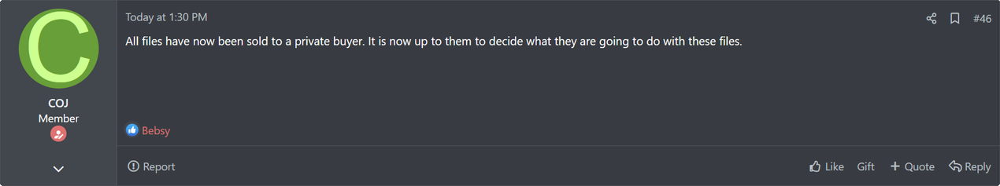
-
February 12, 2026: Forum member Disoveries22 leaks a lossless version of the initial The Paper Kingdom leak, though it's validity is disputed by forum members.
They accuse Coming of Jesus of being a a doxxer and a scammer, who extorted Excalibur out of thousands of dollars alongside the album itself. They also allege that Coming of Jesus wanted to sell "insanely private" information about the band to private buyers, and he's well known in the community for this toxic behaviour.
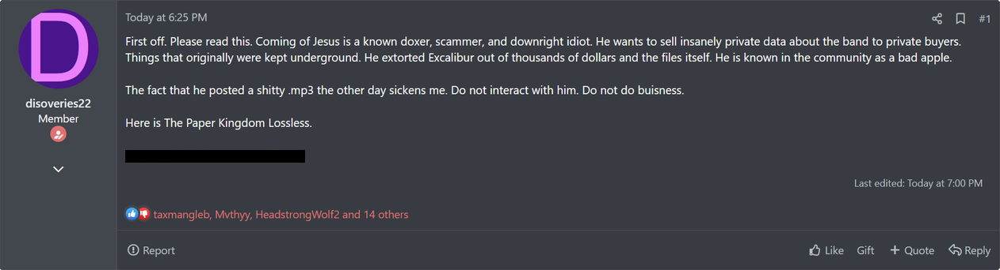
Later that day, they leak two more files: an alternate version of "Bike Thief", which has a different outro and is missing the "Stars Align" intro present in the initial leak, and an alternate version of version of "War Beneath The Rain", which doesn't transition into the song "Paper Swords" as it does in the initial leak.
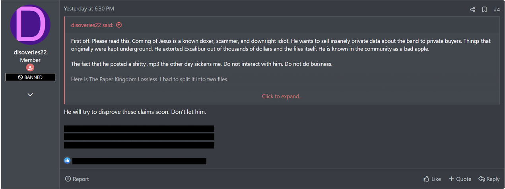
-
February 14, 2026: Coming of Jesus calls out one of his buyers for not vaulting the sold material they had allegedly agreed upon, and leaks two more unreleased files as retaliation—a track titled "BATMAN MAP DEMO" and another file called "Sketchs in Batman Map", a twenty-minute audio recording of Gerard and Ray working on a song together in the studio.
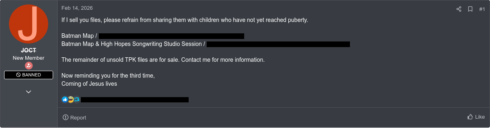
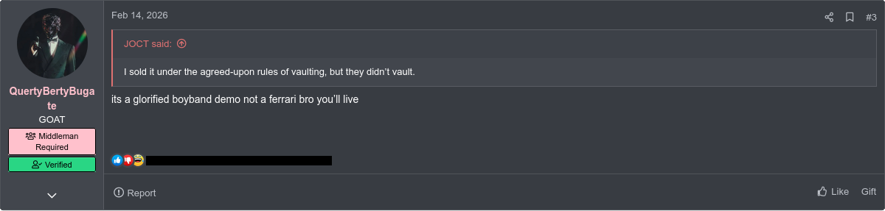
-
February 16, 2026: Coming of Jesus releases another audio recording titled "Batman Map (Idea Session)", claiming that a snippet of it had been circulating previously.
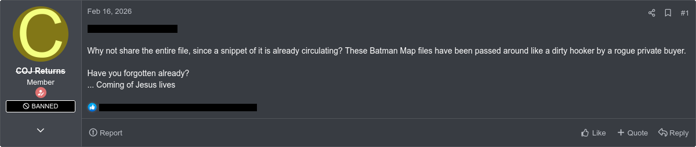
In the replies, he addresses rumours about files from 2019, claiming that they're false, and any files dated 2019 came from Doug re-exporting old files from 2012 while revisiting old material with the band.
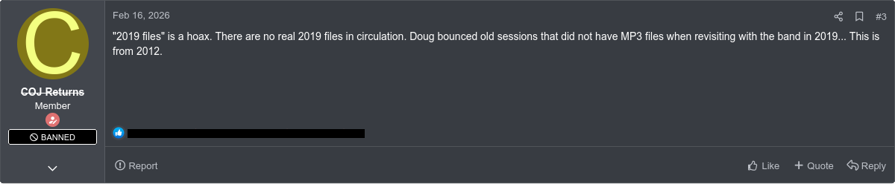
Links: Unavailable due to legal reasons.
-
February 17, 2026: LEAKED member Bebsy leaks a demo of the band's 2022 single The Foundations of Decay, and says it's from March 2022.
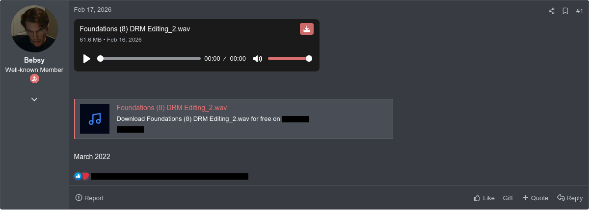
Links: Unavailable due to legal reasons.
-
February 18, 2026: A user named Toasty leaks a demo of "Don't You Get Behind That Bus!", and promises to leak more music every day until he runs out of material.
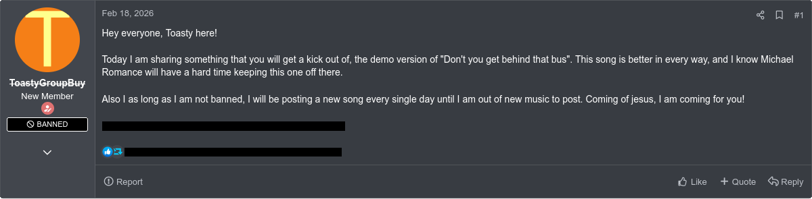
Links: Unavailable due to legal reasons.

{kind=link}
July
-
July 8, 2026: While thanking Jarrod Alexander for his drumming on their most recent single The Foundations of Decay, Gerard briefly mentions The Paper Kingdom by name for the first time since 2014.
[Full transcription unavailable due to Gerard's accent]
-The Paper Kingdom, which didn't come out- well, kinda.— Gerard Way
Tracklist
This is currently the most complete track-list of The Paper Kingdom that we have, taken from the leaked test sequence from February 2026.- Fake Your Death (3:31)
- Witch (5:30)
- Bike Thief (5:02)
- Operation Day (4:30)
- Falling Down (3:00)
- Birthday Girl (3:16)
- Dark Cloud (6:10)
- Wake Up! (3:12)
- Louder (3:47)
- Narita Airport (2:32)
- War Beneath The Rain (4:09)
- Paper Swords (5:32)
- Dive (5:29)
- High Hopes (4:59)
- Dogs (4:30)
- Perfectly Well (2:15)
Source: chorus.fm
Theories and Speculation
This section is dedicated to speculation and theories by the community surrounding The Paper Kingdom, ranging from the origin of the leaks to how the albums visual could've looked visually.All information in the following sections is sourced from community speculation or unidentified sources whose identies and reliablity cannot be verified. Be open-minded about what you read online, and never treat or present unverified information as fact.
Origin of Leaks
2024 Witch Leak
2019 Revival Attempt
2012 Soundchecks
Gerard's Solo Material
Visual Style
Contact
If you have any questions or information that I might find useful, please send an email to info@zweegle.com, and I'll get back to you as soon as possible.
I will not provide links to copyrighted material.Special Thanks
- Sammyliterally, for creating the original blog post that inspired me to make this one.
- The team at My Chemical Leakage, for creating the My Chemical Romance tracker.
- Ham1ltron, for creating the amazing absolutely cover art and letting me use it for this page!
Credits
Editor
- Zweegle
Feedback
- Fedew
- Goose
- Paperjammer
Tracker Team
- Stupidity at it's Finest
- Bloodedge
- Paperjammer